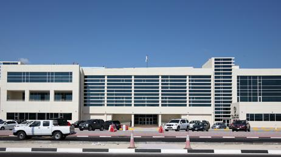
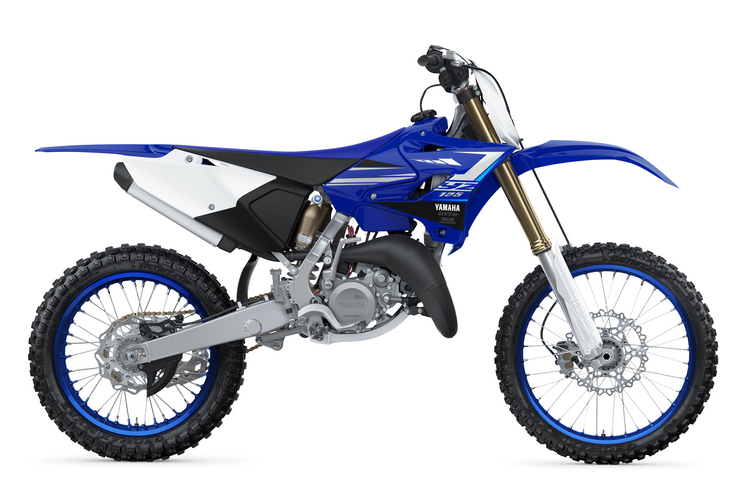

- Ryan Wynn
- Home
- Experience
- Contact Me
I had a great childhood. Started racing dirtbikes when I was 4 years old. This is what started my passion for racing.
My family and I then moved to the UAE (United Arab Emirates). I started racing motocross at Jebel Ali and this is where my career began.
I went to SEA in Dubai where I learnt computer graphics. Such as Photoshop, 3DS Max, and Adobe Illustrator.
I later on moved to Croatia to Rochester Institute of Technology where I started my web and mobile course. I learntg a little of HTML, CSS and Java to name a few. Due to unforseen circumstances I moved back to Abu Dhabi and was unable to compkete my course there.
I went to school in Abu Dhabi at Al Yasmina. I graduated with all of my GCSE's
This included: English, Math, Science, and IT to name a few. The ones I listed are not my favorite subjects.
I ran my own motocross training school for 1 year.
I have coached and instructed many fitness classes both online and in person.
